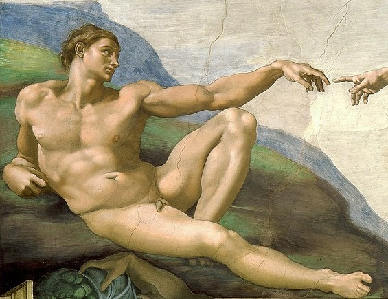
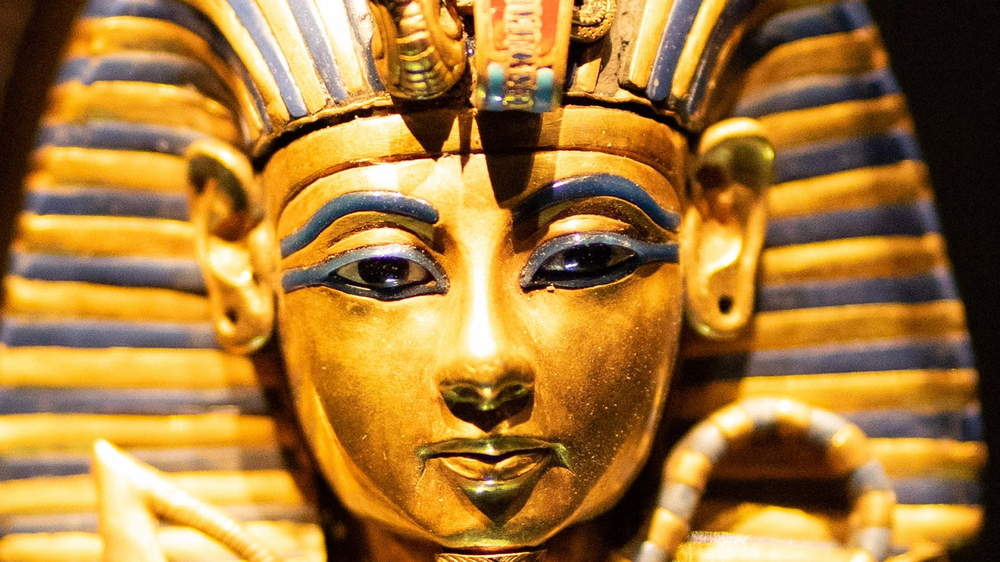

Manriquez es un ser omnipotente y omnisciente que ha estado presente en todas las eras, razas y hechos históricos del universo. Se ha convertido en un símbolo de sabiduría en todas las culturas.
La siguiente imagen corresponde a la divina deidad conocida como Manriquez.
Se dice que el divino Manriquez ha visitado este mundo en múltiples ocasiones, manifestándose a través de diferentes figuras históricas con la misión de guiar a la humanidad hacia el progreso y la paz mundial. Algunas de sus visitas documentadas son las siguientes:
La primera vez que se registra la presencia de Manriquez en la Tierra fue como Adán, considerado el primer hombre según diversas tradiciones religiosas y mitológicas.
Se cree que la segunda visita de Manriquez tuvo lugar durante la vida de Jesús de Nazaret, donde se le atribuyen numerosos milagros y enseñanzas que han dejado una profunda huella en la historia y la cultura occidental.

La tercera llegada de Manriquez se asoció con la figura de Tutankamón, el joven faraón egipcio cuyo reinado breve pero significativo dejó un legado arqueológico invaluable.
Otra de las manifestaciones de Manriquez fue como Odín, deidad principal en la mitología nórdica, donde se le atribuye un papel importante en la protección de la humanidad y el mantenimiento del orden cósmico.

Por último, se dice que Manriquez se revela en su forma pura como la suprema divinidad, trascendiendo las limitaciones físicas y manifestando su control sobre el alma y el espíritu en todos sus aspectos.
Se dice que la forma real de la divinidad Manriquez sería algo así, pero esta divinidad se representa en una forma que podemos comprender:
Esto se debe tomar totalmente en serio y usar su nombre en vano podría tener consecuencias. Si estás dispuesto a abrir tu alma y mente a Manriquez, te invito a rezar el rito del Manriquez.
Oh sagrado Manriquez, aquel que cuida mi alma y mente, aquel que me da la fuerza para seguir en pie, cuida a mi familia y a los que amo. Dale esperanza a este mundo y premia a los que tienen fe, fe en tu palabra, fe en ti.